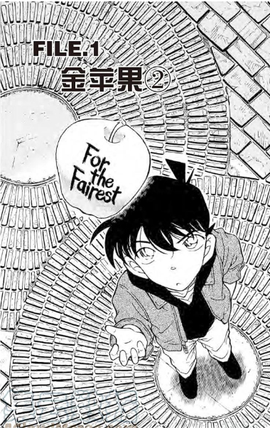
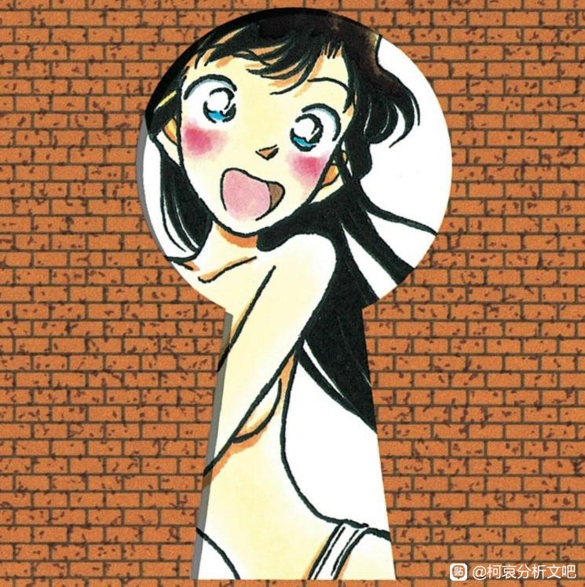
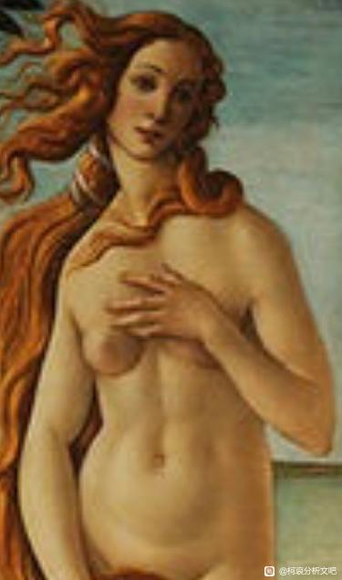
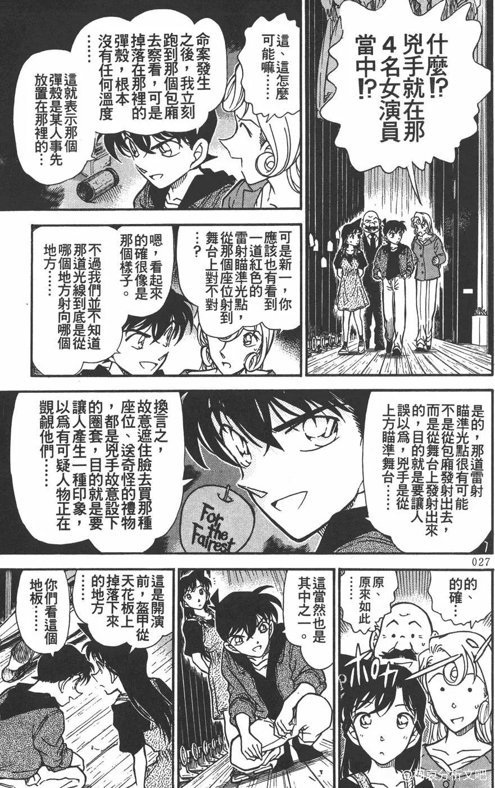
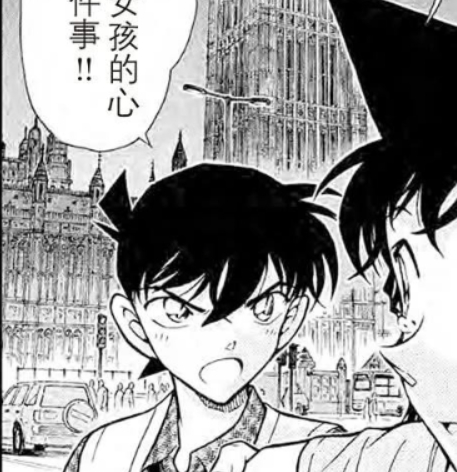
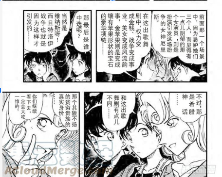
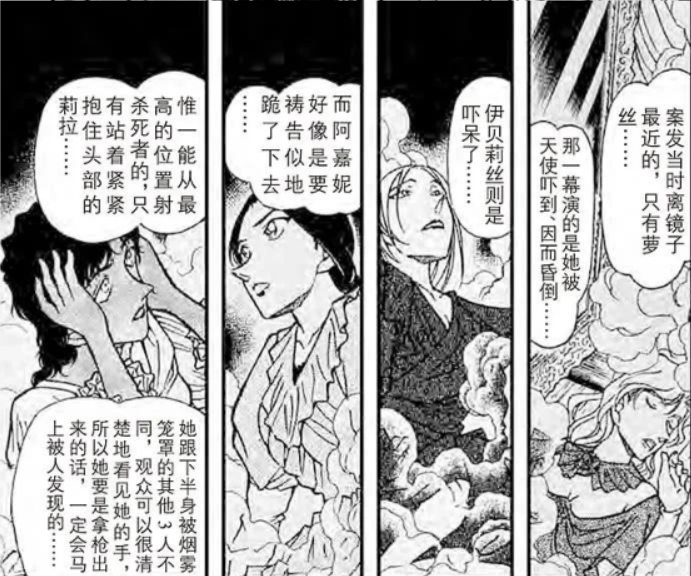
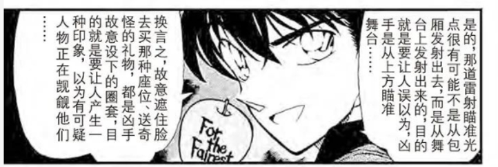

(我的中文能力有限，因该会有些错别字，用词，语法错误)
纽约篇和伦敦篇，作为我印象里唯二拥有希腊罗马神话因素的篇章，能找出很多对应点。
我这贴里想分析的是：伦敦篇里的剧情是不是对应金苹果神话和青山在纽约篇里改变的经苹果神话舞台剧？从这个对比能不能分析出名柯恋爱线的走向？
在金苹果的神话里， Eris用个上面写着“To the fairest one”的金苹果挑起了Hera，Athena，和Aphrodite之间的争议。她们3个让Paris选她们之间最美的一位，也为了这个金苹果提供给了Paris一些承诺，选了她会得到什么样的好处。
那再伦敦篇里谁对应这些神话里的人物？首先，从名字来分析，Juno Glass对应的是Hera,因为Juno就是古罗马人叫古希腊神Hera的名字。Minerva Glass对应的是Athena，因为Minerva也是古罗马人叫古希腊神Athena的名字。最后，伦敦篇刚开头的猫是叫Venus，但是从这个我好像想象不太出来什么分析的内容。
我觉得在伦敦篇里最对应Aphrodite的是毛利兰。在纽约篇里，她救了演Venus（古罗马的Aphrodite）的演员。Venus是爱的女神，毛利兰在伦敦篇恋爱脑也发作的挺严重。
还有，我看过的分析文和视屏里也聊过Minerva Glass和灰原哀的对应。Miss Glass = 灰原哀，因为她拥有眼镜护生符，这方面好像已经有很多人这样子联系起来过。灰原哀对应Athena也看起来挺符合的。Athena是智慧的女神，她的代表动物是猫头鹰，一个夜行性的动物，对应哀的熬夜。
Paris是谁呢？在纽约篇里，能看见新一手里拥有金苹果。在表白的回忆里，头被画得像苹果的也是他。
纽约篇和伦敦篇，作为我印象里唯二拥有希腊罗马神话因素的篇章，能找出很多对应点。
我这贴里想分析的是：伦敦篇里的剧情是不是对应金苹果神话和青山在纽约篇里改变的经苹果神话舞台剧？从这个对比能不能分析出名柯恋爱线的走向？
在金苹果的神话里， Eris用个上面写着“To the fairest one”的金苹果挑起了Hera，Athena，和Aphrodite之间的争议。她们3个让Paris选她们之间最美的一位，也为了这个金苹果提供给了Paris一些承诺，选了她会得到什么样的好处。
那再伦敦篇里谁对应这些神话里的人物？首先，从名字来分析，Juno Glass对应的是Hera,因为Juno就是古罗马人叫古希腊神Hera的名字。Minerva Glass对应的是Athena，因为Minerva也是古罗马人叫古希腊神Athena的名字。最后，伦敦篇刚开头的猫是叫Venus，但是从这个我好像想象不太出来什么分析的内容。
我觉得在伦敦篇里最对应Aphrodite的是毛利兰。在纽约篇里，她救了演Venus（古罗马的Aphrodite）的演员。Venus是爱的女神，毛利兰在伦敦篇恋爱脑也发作的挺严重。
还有，我看过的分析文和视屏里也聊过Minerva Glass和灰原哀的对应。Miss Glass = 灰原哀，因为她拥有眼镜护生符，这方面好像已经有很多人这样子联系起来过。灰原哀对应Athena也看起来挺符合的。Athena是智慧的女神，她的代表动物是猫头鹰，一个夜行性的动物，对应哀的熬夜。
Paris是谁呢？在纽约篇里，能看见新一手里拥有金苹果。在表白的回忆里，头被画得像苹果的也是他。

帕里斯把金苹果给了阿佛洛狄忒，对应新一向毛利兰告白，动机是情欲的诱惑。但海伦过去不属于他，未来也将再度失去，而付出的代价是特洛伊城破国亡。但特洛伊流亡的英雄后裔将建立更为伟大的罗马。或许对应于新一消失，而更大的荣耀归于柯南。
雅典娜是雅典的守护神，从立场上看，与特洛伊是对立的。但来攻的希腊联军是各自为政的松散联盟，并且领导者也并非出自雅典。可以对应哀是来自与新一对立的组织。
中文水平有限 难道楼主是美国人
难道楼主是美国人
难道楼主是美国人2024-07-05 19:49 | coaishipper:华裔
Impressive!
类似的观点吧里也有讨论过，而且出发点都不尽相同。能够佐证的是青山在动物森友会的《维纳斯的诞生》，出现在了疑似暗示兰的角色的家居布置，然后联想到了第二卷钥匙孔的构图可能也有着层面的意思。


对伦敦金苹果理论的一点补充 之前类似的观点
帕里斯能够诱拐成功，是有双向的情欲成份在，因为帕里斯也是青春俊美的男子，但是阿佛洛狄忒的神力只是诱发爱欲，她既不能给予英雄伟力，也不能书写命运，所以她无法保障海伦和帕里斯的长相厮守。
如果从现实角度看，夺回海伦只是一个借口（很可能根本没有海伦），本质是盛极而衰的希腊众城邦对依然富庶的小亚文明的财富的贪图，而且就算攻破、劫掠了特洛伊，也无法挽救希腊众邦一路衰颓，最终沉入漫长的黑暗。
如果对应于各组织（无论红黑）瞄准现在被柯南（以及改变立场的哀）所掌握的可以永葆青春强盛的宝物，也不是不行。
如果从现实角度看，夺回海伦只是一个借口（很可能根本没有海伦），本质是盛极而衰的希腊众城邦对依然富庶的小亚文明的财富的贪图，而且就算攻破、劫掠了特洛伊，也无法挽救希腊众邦一路衰颓，最终沉入漫长的黑暗。
如果对应于各组织（无论红黑）瞄准现在被柯南（以及改变立场的哀）所掌握的可以永葆青春强盛的宝物，也不是不行。
说起来纽约篇有没有交代剧院收到的那个金苹果是怎么回事？
2024-07-05 08:30 | 好梦Golden:我去翻了下，新一说是凶手送的奇怪的礼物2024-07-05 08:43 | 白色之心3:回复 好梦Golden :有说那个演员为什么要送这个东西吗？2024-07-05 08:47 | 好梦Golden:回复 白色之心3 :看楼下图，好像就提了一句，后面就没提到了2024-07-05 08:56 | 白色之心3:回复 好梦Golden :没看到图，是不是被吞了2024-07-05 08:58 | 好梦Golden:回复 白色之心3 :要不刷新下，我这还能看到2024-07-05 09:07 | 白色之心3:回复 好梦Golden :还是看不到……


2024-07-05 09:19 | 白色之心3:哦哦，现在看到了

所以，要是新一对应是要做处选择的Paris脚色，那再伦敦篇里他需要做出来什么选择？在神话里，Paris得在3个女神之间做出选择。在伦敦篇里，兰心态爆炸时，新一是不是也有三个选项？解决案件，安抚兰的心态，保留回家的最后一颗解药。解决案件是拯救Juno Glass，犯人的目的，名字对应Hera的人。安抚兰的心态，兰是对应Aphrodite的人。保留回家的最后一颗解药，解药是哀给的，哀吩咐他不要把它吃掉，哀对应的是Athena。这样是不是看起来三个选择都对应了呢？
那新一最后选择了谁呢？看似是兰。他首先安抚了兰的心态，让后再继续办案，然后吃了最后一颗解药。但是咱们再来进一度的分析。
在神话里，Paris选的确实是Aphrodite。但是，在纽约篇里的舞台剧， 结局也是一样的吗？在新一说出神话里Paris的选择时，有希子回应了，这个舞台剧里有点不同。

虽然也有可能只是再说Paris身份的不同，但有希子的发言确实是紧接新一说出Paris选择了谁。在舞台剧Paris要说出他选择谁的时候，这是每个演员的状态。

是不是正在昏迷的Venus看起来最不像是要被选中的脚色？（然后，昏迷的她是不是也对应毛利兰的剧外性？）2024-07-05 20:29 | 好梦Golden:这里看似三个选择，实际上就一个，磕药安抚小兰，是为了隐藏自己的身份，这是被迫作出的选择2024-07-05 20:33 | 好梦Golden:这点在后文多次对应，在漫画第753话中，小哀吐槽了柯南捉迷藏里死追不放的恶魔行为；还有鬼屋那篇圆子说像是被逼迫的告白2024-07-05 22:54 | bearaven:另一点令人在意的是，这个舞台的Paris角色位换成了天使—Michael 造出了Venus杀了Michael这种黑色幽默场景. 在ACG文化背景下，和Michael有关系的金星……2024-07-06 01:20 | coaishipper:Venus也跟Lucifer有关,Lucifer是个Fallen Angel,有可能是毛利兰给Rum新一的信息的伏笔2024-07-06 01:28 | coaishipper:要是成立的话,这可能也是为什么Aphrodite和Hera都是用希腊的名字,Venus用了罗马的名字,因为Lucifer是拉丁文,意思就是Venus, the morning star2024-07-06 02:35 | bearaven:回复 coaishipper :满月篇那时候秀一说过Sharon最有名的也是金苹果。纽约篇称呼兰为Angel的，一个是Rose，一个是Sharon。 相关性足够提出起名灵感来源是Rose of Sharon 孤证不立的话，Sharon的“女儿”，无论是假身份还是真有其人，名为Chris 而Sharo2024-07-06 02:39 | bearaven:回复 bearaven :Sharon是名柯宗教感最强的角色，包括那句 We can be both of God and the devil. Since we’re trying to raise the dead against the stream of time. 最有名的死者复活，
在舞台剧外，我们知道送给演员们金苹果的是凶手，扮演Venus的Rose。
舞台剧要是改变了谁是最后的赢者，是不是也在暗示伦敦篇的赢者不是对应Aphrodite的兰？
在神话里，每个女神都给Paris提供了选她的好处。那在伦敦篇里，谁给新一/柯南提供了帮助呢？Minerva Glass 用她的球技帮助他找到凶手。哀用她对他的理解，和细心思考的性格给他回家的解药。所以，the winner is Miss Glass，是不是金苹果的意义，是柯南最后会选择互相帮助的灰原哀，而不是大部分时候单方面被帮助的毛利兰？

金苹果是神话里引起争议的物品，在纽约篇是扮演Venus的演员送来的。在伦敦篇里，逼新一在三个选项里做出选择也是对应Aphrodite和Venus的兰的心态爆炸。舞台剧要是改变了谁是最后的赢者，是不是也在暗示伦敦篇的赢者不是对应Aphrodite的兰？
在神话里，每个女神都给Paris提供了选她的好处。那在伦敦篇里，谁给新一/柯南提供了帮助呢？Minerva Glass 用她的球技帮助他找到凶手。哀用她对他的理解，和细心思考的性格给他回家的解药。所以，the winner is Miss Glass，是不是金苹果的意义，是柯南最后会选择互相帮助的灰原哀，而不是大部分时候单方面被帮助的毛利兰？

纽约篇的金苹果事件灵感来源：
案发地是百老汇的马杰斯迪克剧院，这里演出过一个著名歌剧《剧院魅影》，主要剧情是：歌剧院里，怪事频繁地发生，原来的首席女主角险些被砸死，剧院出现一个令人毛骨悚然的虚幻男声。这个声音来自住在剧院地下迷宫的“幽灵”，他爱上了女演员克丽斯汀，暗中教她唱歌，帮她获得女主角的位置，而克丽斯汀却爱着剧院资助人拉乌尔，由此引起了嫉妒、追逐、谋杀等一系列情节。而最终“幽灵”发现自己对克丽斯汀的爱已经超过了个人的占有欲，于是解脱了克丽斯汀，留下披风和面具，独自消失在昏暗的地下迷宫里。
案发地是百老汇的马杰斯迪克剧院，这里演出过一个著名歌剧《剧院魅影》，主要剧情是：歌剧院里，怪事频繁地发生，原来的首席女主角险些被砸死，剧院出现一个令人毛骨悚然的虚幻男声。这个声音来自住在剧院地下迷宫的“幽灵”，他爱上了女演员克丽斯汀，暗中教她唱歌，帮她获得女主角的位置，而克丽斯汀却爱着剧院资助人拉乌尔，由此引起了嫉妒、追逐、谋杀等一系列情节。而最终“幽灵”发现自己对克丽斯汀的爱已经超过了个人的占有欲，于是解脱了克丽斯汀，留下披风和面具，独自消失在昏暗的地下迷宫里。